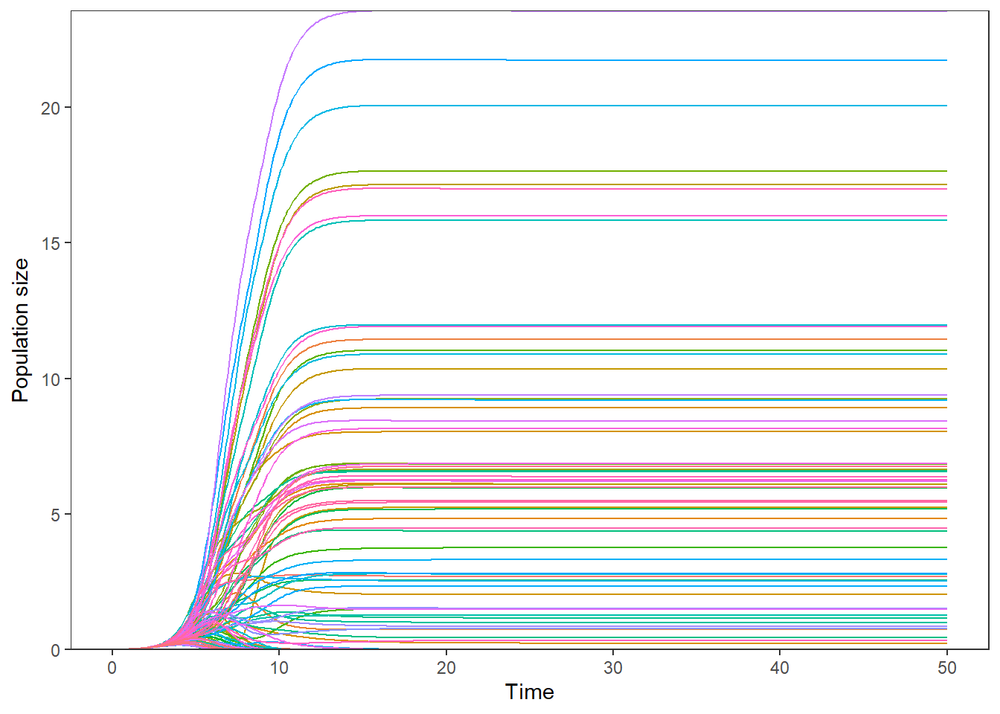
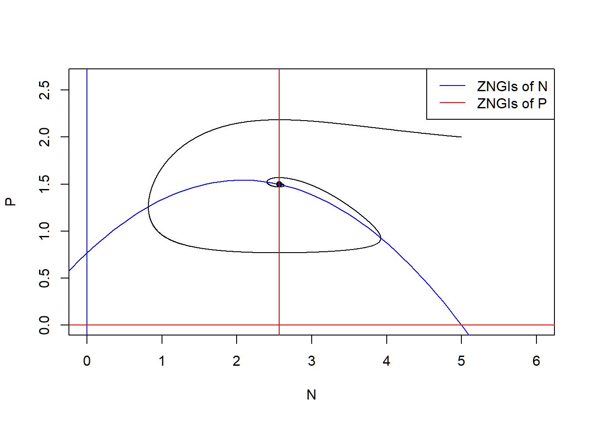
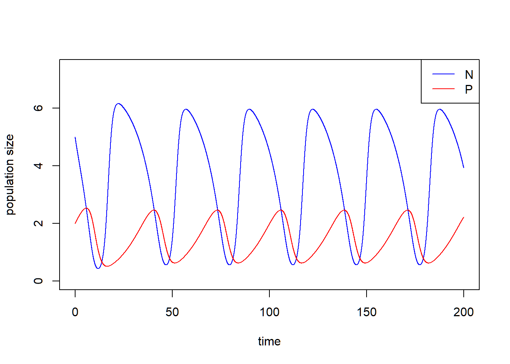
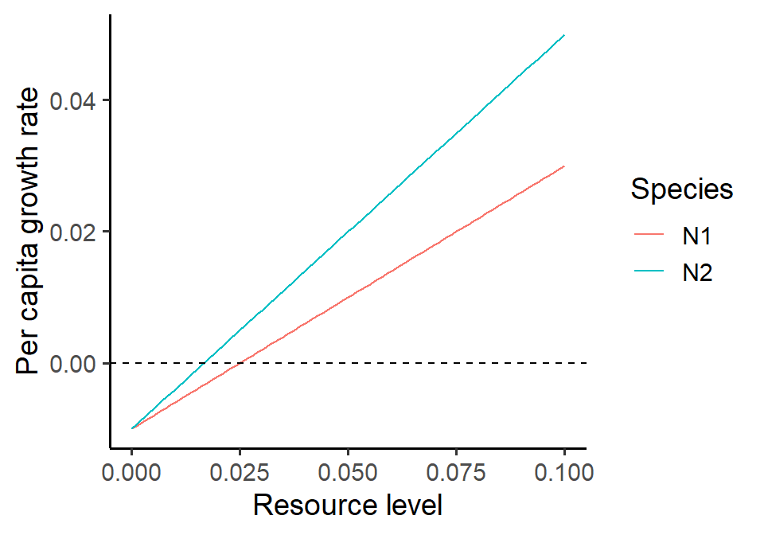

Week 12 - Rosenzweig-MacArthur predator-prey model
Part 1: Rosenzweig–MacArthur predator–prey model
In this lab we are going to analyze the Rosenzweig–MacArthur predator–prey model:
\[\begin{align*} \frac {dN}{dt} &= rN(1-\frac{N}{K})-a\frac{N}{1+ahN}P\\ \frac {dP}{dt} &= ea\frac{N}{1+ahN}P-dP,\\ \end{align*}\] where \(r\) is the intrinsic growth rate of prey, \(K\) is the carrying capacity of prey, \(a\) is the rate of prey being consumed by predator, \(h\) is the handling time of predator, \(e\) is the assimilation rate of predation and \(d\) is the mortality rate of predator. The ZNGIs of \(N\) are \[ N = 0 \text{ and } P = \frac{r}{a}(1-\frac{N}{K})(1+ahN) \] and the ZNGIs of \(P\) are \[ P = 0 \text{ and } N = \frac{d}{a(e-dh)} \] The coexistence equilibrium is \(E_{np} = \left(N^* = \frac{d}{a(e-dh)}, P^* = \frac{r}{a}(1-\frac{N^*}{K})(1+ahN^*)\right)\).
Please simulate the model using the parameter set (\(N_0\) = 5, \(P_0\) = 2, \(r\) = 1.0, \(K\) = 5.0, \(a\) = 1.3, \(h\) = 0.9, \(e\) = 0.6, \(d\) = 0.5) and plot the population trajectories of predator and prey as well as show their population dynamics in the state-space diagram.
library(deSolve)
### Model specification
RM_predation_model <- function(times, state, parms) {
with(as.list(c(state, parms)), {
dN_dt = r*N*(1-(N/K))-(a*N/(1+a*h*N))*P
dP_dt = e*(a*N/(1+a*h*N))*P-d*P
return(list(c(dN_dt, dP_dt)))
})
}
### Model parameters
times <- seq(0, 200, by = 0.01)
state <- c(N = 5, P = 2)
parms <- c(r = 1.0, K = 5.0, a = 1.3, h = 0.9, e = 0.6, d = 0.5)
### Model application
pop_size <- ode(func = RM_predation_model, times = times, y = state, parms = parms)
### equilibrium
E_np <- with(as.list(parms),
c(N = d/(a*(e-d*h)),
P = r/a*(1-d/(a*(e-d*h))/K)*(1+a*h*d/(a*(e-d*h)))))
### Visualize the population dynamics
# population trajectories
plot(c(0, max(times)), c(0, max(pop_size[, c("N", "P")])), type = "n", xlab = "time", ylab = "population size")
lines(N ~ time, data = pop_size, col = "blue") # dynamics of N
lines(P ~ time, data = pop_size, col = "red") # dynamics of P
legend("topright", legend = c("N", "P"), col = c("blue", "red"), lty = 1)
# state-space diagram
max_P <- max(pop_size[ ,"P"])
max_N <- max(pop_size[ ,"N"])
plot(P ~ N, data = pop_size, type = "l", xlim = c(0, max_N*1.2), ylim = c(0, max_P*1.2))
points(E_np["P"] ~ E_np["N"], pch = 16) # equilibrium
with(as.list(parms), {
# ZNGIs of N
abline(v = 0, col = "blue")
curve(r/a*(1-x/K)*(1+a*h*x), from = -2, to = K+2, col = "blue", add = T)
# ZNGIs of P
abline(h = 0, col = "red")
abline(v = d/(a*(e-d*h)), col = "red")
})
legend("topright", legend = c("ZNGIs of N", "ZNGIs of P"), col = c("blue", "red"), lty = 1)
Remark: with() is a function that you can load the value in the object without subsetting.
Now we increase the carry capacity \(K\) to show the paradox of enrichment. Let’s consider \(K = 7\) with other parameters fixed.
### Model parameters
times <- seq(0, 200, by = 0.01)
state <- c(N = 5, P = 2)
parms <- c(r = 1.0, K = 7.0, a = 1.3, h = 0.9, e = 0.6, d = 0.5)
### Model application
pop_size <- ode(func = RM_predation_model, times = times, y = state, parms = parms)
### equilibrium
E_np <- with(as.list(parms),
c(N = d/(a*(e-d*h)),
P = r/a*(1-d/(a*(e-d*h))/K)*(1+a*h*d/(a*(e-d*h)))))The population size of \(N\) and \(P\) do not stay at the equilibrium but cycle.
### Visualize the population dynamics
# population trajectories
plot(c(0, max(times)), c(0, max(pop_size[, c("N", "P")])*1.2), type = "n", xlab = "time", ylab = "population size")
lines(N ~ time, data = pop_size, col = "blue") # dynamics of N
lines(P ~ time, data = pop_size, col = "red") # dynamics of P
legend("topright", legend = c("N", "P"), col = c("blue", "red"), lty = 1)
# state-space diagram
max_P <- max(pop_size[ ,"P"])
max_N <- max(pop_size[ ,"N"])
plot(P ~ N, data = pop_size, type = "l", xlim = c(0, max_N*1.2), ylim = c(0, max_P*1.2))
points(E_np["P"] ~ E_np["N"], pch = 16) # equilibrium
with(as.list(parms), {
# ZNGIs of N
abline(v = 0, col = "blue")
curve(r/a*(1-x/K)*(1+a*h*x), from = -2, to = K+2, col = "blue", add = T)
# ZNGIs of P
abline(h = 0, col = "red")
abline(v = d/(a*(e-d*h)), col = "red")
})
legend("topright", legend = c("ZNGIs of N", "ZNGIs of P"), col = c("blue", "red"), lty = 1)
Do the long-term average of the population size equal to the equilibrium? Let’s calculate the long-term average of population size by function pracma::findpeaks(). It returns a matrix where each row represents one peak found. The first column gives the height, the second the position/index where the maximum is reached, the third and forth the indices of where the peak begins and ends — in the sense of where the pattern starts and ends.
library(pracma)
# find time points when local peaks occur
peaks <- findpeaks(pop_size[, "N"])[ ,2]
peaks ## [1] 2219 5694 8960 12225 15490 18755# get period as time between peaks
periods <- peaks[length(peaks)] - peaks[length(peaks) - 1]
# long-term average of N
avg_N <- mean(pop_size[(length(times) - periods + 1):length(times), "N"])
avg_N## [1] 3.642661# long-term average of P
avg_P <- mean(pop_size[(length(times) - periods + 1):length(times), "P"])
avg_P## [1] 1.4757## N P
## 2.564103 1.949845We show that the the long-term average of the population size of \(N\) and \(P\) are not identical to the equilibrium of \(N\) and \(P\). In fact, the long-term average of the resource \(N\) is larger than the original equilibrium due to the fact that the per capita growth rate of the \(P\) is a concave-downward function.
What will happen if you add a perturbation to the system (i.e., change the initial conditions)? Try out different values of \(N_0\) and \(P_0\) and visualize the differences in the state-space diagram.
Shiny app is credit to Gen-Chang Hsu
Part 2: Bifurcation diagram
Here, we simulate the bifurcation diagram along the prey carrying capacity. Different from previous bifurcation plots, our analytical analyses told us that this model may end up in a cycle. Therefore, we need to (1) identify whether the final state is cycling (i.e., based on the variance of the time series) and, if so, (2) find the cycle and store the long-term average across multiple cycles.
library(tidyverse)
#### (1) Specify parameters
times <- seq(0, 1500, by = 1)
state <- c(N = 1, P = 1)
parms <- c(r = 1.0, K = 5.0, a = 1.3, h = 0.9, e = 0.6, d = 0.5)
r = as.numeric(parms["r"])
K = as.numeric(parms["K"])
a = as.numeric(parms["a"])
h = as.numeric(parms["h"])
e = as.numeric(parms["e"])
d = as.numeric(parms["d"])
#### (2) Create vector for K and saving space
K.vector <- seq(from = 0.1, to = 9.0, by = 0.05)
N.sim <- length(K.vector)
Data <- as.data.frame(matrix(0,
nrow = N.sim * 2, # one for N, one for P
ncol = 7))
names(Data) <- c("Variable", "MeanDensity", "MinDensity", "MaxDensity",
"Variation", "K", "Dynamic")
#### (3) Run the simulation for each K within the vector
for(i in 1:N.sim){
## Run the simulation with updated K value
parms["K"] <- K.vector[i]
Temp <- ode(func = RM_predation_model, times = times, y = state, parms = parms)
## Only use the last 300 time steps of the simulation
Temp <- as.data.frame(Temp[1200:1500, ])
## If there is no fluctuation, can freely use all final steps
if(var(Temp$N) < 1e-5){
Temp.use <- Temp
Temp.use$K <- parms["K"]
Temp.use$Dynamic <- "Stable"
}
## If there is fluctuation, need to get accurate cycle start-end point
if(var(Temp$N) > 1e-5){
peaks <- pracma::findpeaks(Temp[, "N"])[ ,2]
Temp.use <- Temp[(peaks[1] : peaks[length(peaks)]), ]
Temp.use$K <- parms["K"]
Temp.use$Dynamic <- "Cycle"
}
## Use tidyverse to wriggle data
Temp.tidy <-
Temp.use %>%
gather(key = Variable, value = Density, -c(time, K, Dynamic)) %>%
group_by(Variable) %>%
summarise(MeanDensity = mean(Density),
MinDensity = min(Density),
MaxDensity = max(Density),
Variation = var(Density),
K = unique(K),
Dynamic = unique(Dynamic))
## Save simulation summary into Data
Data[(i-1)*2 + c(1:2), ] <- Temp.tidy
}
#### (4) Plot
Data %>%
ggplot(aes(x = K, color = Variable)) +
geom_hline(yintercept = 0) +
geom_vline(xintercept = d / (a * (e - h * d)),
linetype = "longdash", col="grey") +
geom_vline(xintercept = (e + d * h) / (a * h * (e - d * h)),
linetype = "longdash", col="grey") +
geom_line(data = Data[Data$Dynamic == "Stable", ],
aes(y = MeanDensity)) +
geom_line(data = Data[Data$Dynamic == "Cycle", ],
aes(y = MeanDensity),
linetype = "dotted", alpha = 0.5) +
geom_line(data = Data[Data$Dynamic == "Cycle", ],
aes(y = MinDensity),
linetype = "dashed") +
geom_line(data = Data[Data$Dynamic == "Cycle", ],
aes(y = MaxDensity),
linetype = "dashed") +
labs(x = "K", y = "Equilibrium value") +
scale_color_manual(values = c("N" = "blue", "P" = "red")) +
theme_classic() +
theme(legend.position = "bottom") 